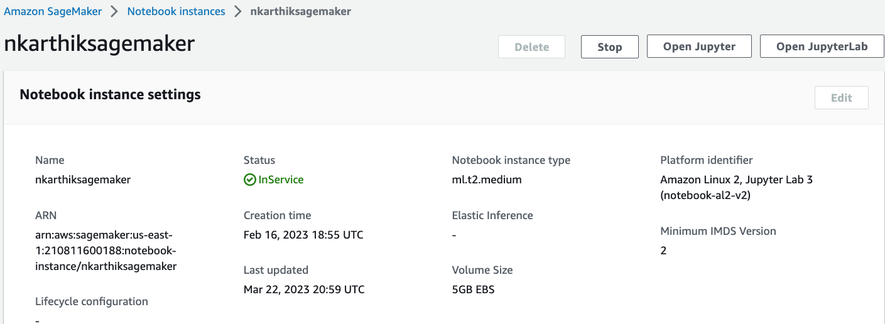
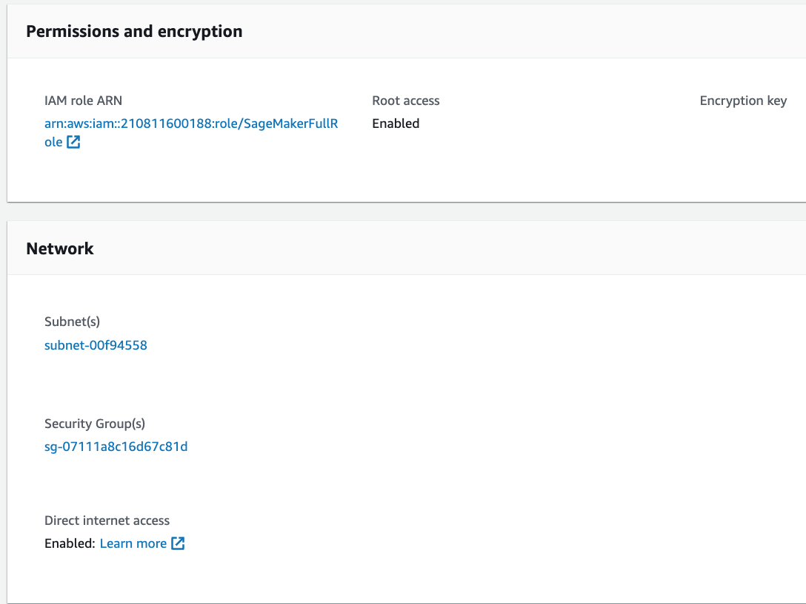
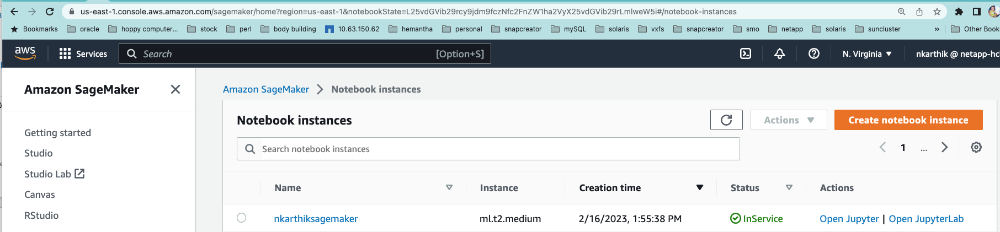
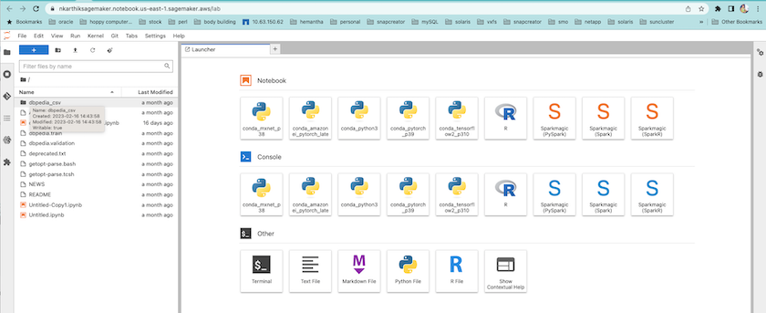

Intelligenza artificiale
Intelligenza artificiale
Dualità dei dati per data scientist e altre applicazioni
 Suggerisci modifiche
Suggerisci modifiche
I dati sono disponibili in NFS e accessibili da S3 da AWS SageMaker.
Requisiti tecnologici
I notebook NetApp BlueXP, NetApp Cloud Volumes ONTAP e AWS SageMaker sono necessari per il caso di utilizzo della doppia funzionalità dei dati.
Requisiti software
La seguente tabella elenca i componenti software necessari per implementare il caso d'utilizzo.
| Software | Quantità |
|---|---|
BlueXP |
1 |
NetApp Cloud Volumes ONTAP |
1 |
Notebook AWS SageMaker |
1 |
Procedure di implementazione
L'implementazione della soluzione per la dualità dei dati comporta le seguenti attività:
-
Connettore BlueXP
-
NetApp Cloud Volumes ONTAP
-
Dati per l'apprendimento automatico
-
AWS SageMaker
-
Apprendimento automatico validato dai notebook Jupyter
Connettore BlueXP
In questa convalida, abbiamo utilizzato AWS. È applicabile anche a Azure e Google Cloud. Per creare un connettore BlueXP in AWS, attenersi alla seguente procedura:
-
Abbiamo utilizzato le credenziali basate sull'abbonamento mcarl-marketplace in BlueXP.
-
Scegli la regione adatta al tuo ambiente (ad esempio, US-East-1 [N. Virginia]), quindi selezionare il metodo di autenticazione (ad esempio, assumere le chiavi role o AWS). In questa convalida, utilizziamo le chiavi AWS.
-
Fornire il nome del connettore e creare un ruolo.
-
Fornire i dettagli di rete, ad esempio VPC, subnet o coppia di chiavi, a seconda che sia necessario un IP pubblico o meno.
-
Fornire i dettagli per il gruppo di protezione, ad esempio l'accesso HTTP, HTTPS o SSH dal tipo di origine, ad esempio le informazioni su Anywhere e sull'intervallo IP.
-
Esaminare e creare BlueXP Connector.
-
Verificare che lo stato dell'istanza di BlueXP EC2 sia in esecuzione nella console AWS e controllare l'indirizzo IP dalla scheda Networking.
-
Accedere all'interfaccia utente del connettore dal portale BlueXP oppure utilizzare l'indirizzo IP per l'accesso dal browser.
NetApp Cloud Volumes ONTAP
Per creare un'istanza di Cloud Volumes ONTAP in BlueXP, attenersi alla seguente procedura:
-
Creare un nuovo ambiente di lavoro, selezionare il provider cloud e selezionare il tipo di istanza di Cloud Volumes ONTAP (ad esempio CVO singolo, ha o Amazon FSxN per ONTAP).
-
Fornire dettagli come il nome e le credenziali del cluster Cloud Volumes ONTAP. In questa convalida, abbiamo creato un'istanza di Cloud Volumes ONTAP chiamata
svm_sagemaker_cvo_sn1. -
Selezionare i servizi necessari per Cloud Volumes ONTAP. In questa convalida, abbiamo scelto di eseguire solo il monitoraggio, quindi abbiamo disattivato Data Sense & Compliance e Backup to Cloud Services.
-
Nella sezione Location & Connectivity, selezionare la regione AWS, VPC, subnet, gruppo di sicurezza, metodo di autenticazione SSH, e una password o una coppia di chiavi.
-
Scegliere il metodo di ricarica. Per questa convalida abbiamo utilizzato Professional.
-
È possibile scegliere un pacchetto preconfigurato, ad esempio POC e piccoli carichi di lavoro, carichi di lavoro di produzione di dati applicativi e database, DR conveniente o carichi di lavoro di produzione dalle performance più elevate. In questa convalida, scegliamo POC e workload di piccole dimensioni.
-
Creare un volume con una dimensione specifica, protocolli consentiti e opzioni di esportazione. In questa convalida, abbiamo creato un volume chiamato
vol1. -
Scegliere un tipo di disco del profilo e una policy di tiering. In questa convalida, abbiamo disattivato efficienza dello storage e SSD General- purpose – Dynamic Performance.
-
Infine, esaminare e creare l'istanza di Cloud Volumes ONTAP. Quindi attendere 15-20 minuti affinché BlueXP crei l'ambiente di lavoro Cloud Volumes ONTAP.
-
Configurare i seguenti parametri per attivare il protocollo di dualità. Il protocollo di dualità (NFS/S3) è supportato da ONTAP 9. 12.1 e versioni successive.
-
In questa convalida, abbiamo creato una SVM chiamata
svm_sagemaker_cvo_sn1e volumevol1. -
Verificare che SVM disponga del supporto del protocollo per NFS e S3. In caso contrario, modificare la SVM per supportarla.
sagemaker_cvo_sn1::> vserver show -vserver svm_sagemaker_cvo_sn1 Vserver: svm_sagemaker_cvo_sn1 Vserver Type: data Vserver Subtype: default Vserver UUID: 911065dd-a8bc-11ed-bc24-e1c0f00ad86b Root Volume: svm_sagemaker_cvo_sn1_root Aggregate: aggr1 NIS Domain: - Root Volume Security Style: unix LDAP Client: - Default Volume Language Code: C.UTF-8 Snapshot Policy: default Data Services: data-cifs, data-flexcache, data-iscsi, data-nfs, data-nvme-tcp Comment: Quota Policy: default List of Aggregates Assigned: aggr1 Limit on Maximum Number of Volumes allowed: unlimited Vserver Admin State: running Vserver Operational State: running Vserver Operational State Stopped Reason: - Allowed Protocols: nfs, cifs, fcp, iscsi, ndmp, s3 Disallowed Protocols: nvme Is Vserver with Infinite Volume: false QoS Policy Group: - Caching Policy Name: - Config Lock: false IPspace Name: Default Foreground Process: - Logical Space Reporting: true Logical Space Enforcement: false Default Anti_ransomware State of the Vserver's Volumes: disabled Enable Analytics on New Volumes: false Enable Activity Tracking on New Volumes: false sagemaker_cvo_sn1::>
-
-
Creare e installare un certificato CA, se necessario.
-
Creare una policy sui dati del servizio.
sagemaker_cvo_sn1::*> network interface service-policy create -vserver svm_sagemaker_cvo_sn1 -policy sagemaker_s3_nfs_policy -services data-core,data-s3-server,data-nfs,data-flexcache sagemaker_cvo_sn1::*> network interface create -vserver svm_sagemaker_cvo_sn1 -lif svm_sagemaker_cvo_sn1_s3_lif -service-policy sagemaker_s3_nfs_policy -home-node sagemaker_cvo_sn1-01 -address 172.30.10.41 -netmask 255.255.255.192 Warning: The configured failover-group has no valid failover targets for the LIF's failover-policy. To view the failover targets for a LIF, use the "network interface show -failover" command. sagemaker_cvo_sn1::*> sagemaker_cvo_sn1::*> network interface show Logical Status Network Current Current Is Vserver Interface Admin/Oper Address/Mask Node Port Home ----------- ---------- ---------- ------------------ ------------- ------- ---- sagemaker_cvo_sn1 cluster-mgmt up/up 172.30.10.40/26 sagemaker_cvo_sn1-01 e0a true intercluster up/up 172.30.10.48/26 sagemaker_cvo_sn1-01 e0a true sagemaker_cvo_sn1-01_mgmt1 up/up 172.30.10.58/26 sagemaker_cvo_sn1-01 e0a true svm_sagemaker_cvo_sn1 svm_sagemaker_cvo_sn1_data_lif up/up 172.30.10.23/26 sagemaker_cvo_sn1-01 e0a true svm_sagemaker_cvo_sn1_mgmt_lif up/up 172.30.10.32/26 sagemaker_cvo_sn1-01 e0a true svm_sagemaker_cvo_sn1_s3_lif up/up 172.30.10.41/26 sagemaker_cvo_sn1-01 e0a true 6 entries were displayed. sagemaker_cvo_sn1::*> sagemaker_cvo_sn1::*> vserver object-store-server create -vserver svm_sagemaker_cvo_sn1 -is-http-enabled true -object-store-server svm_sagemaker_cvo_s3_sn1 -is-https-enabled false sagemaker_cvo_sn1::*> vserver object-store-server show Vserver: svm_sagemaker_cvo_sn1 Object Store Server Name: svm_sagemaker_cvo_s3_sn1 Administrative State: up HTTP Enabled: true Listener Port For HTTP: 80 HTTPS Enabled: false Secure Listener Port For HTTPS: 443 Certificate for HTTPS Connections: - Default UNIX User: pcuser Default Windows User: - Comment: sagemaker_cvo_sn1::*> -
Controllare i dettagli dell'aggregato.
sagemaker_cvo_sn1::*> aggr show Aggregate Size Available Used% State #Vols Nodes RAID Status --------- -------- --------- ----- ------- ------ ---------------- ------------ aggr0_sagemaker_cvo_sn1_01 124.0GB 50.88GB 59% online 1 sagemaker_cvo_ raid0, sn1-01 normal aggr1 907.1GB 904.9GB 0% online 2 sagemaker_cvo_ raid0, sn1-01 normal 2 entries were displayed. sagemaker_cvo_sn1::*> -
Creare un utente e un gruppo.
sagemaker_cvo_sn1::*> vserver object-store-server user create -vserver svm_sagemaker_cvo_sn1 -user s3user sagemaker_cvo_sn1::*> vserver object-store-server user show Vserver User ID Access Key Secret Key ----------- --------------- --------- ------------------- ------------------- svm_sagemaker_cvo_sn1 root 0 - - Comment: Root User svm_sagemaker_cvo_sn1 s3user 1 0ZNAX21JW5Q8AP80CQ2E PpLs4gA9K0_2gPhuykkp014gBjcC9Rbi3QDX_6rr 2 entries were displayed. sagemaker_cvo_sn1::*> sagemaker_cvo_sn1::*> vserver object-store-server group create -name s3group -users s3user -comment "" sagemaker_cvo_sn1::*> sagemaker_cvo_sn1::*> vserver object-store-server group delete -gid 1 -vserver svm_sagemaker_cvo_sn1 sagemaker_cvo_sn1::*> vserver object-store-server group create -name s3group -users s3user -comment "" -policies FullAccess sagemaker_cvo_sn1::*> -
Creare un bucket sul volume NFS.
sagemaker_cvo_sn1::*> vserver object-store-server bucket create -bucket ontapbucket1 -type nas -comment "" -vserver svm_sagemaker_cvo_sn1 -nas-path /vol1 sagemaker_cvo_sn1::*> vserver object-store-server bucket show Vserver Bucket Type Volume Size Encryption Role NAS Path ----------- --------------- -------- ----------------- ---------- ---------- ---------- ---------- svm_sagemaker_cvo_sn1 ontapbucket1 nas vol1 - false - /vol1 sagemaker_cvo_sn1::*>
AWS SageMaker
Per creare un notebook AWS da AWS SageMaker, attenersi alla seguente procedura:
-
Assicurarsi che l'utente che sta creando un'istanza di notebook disponga di un criterio IAM AmazonSageMakerFullAccess o faccia parte di un gruppo esistente che dispone dei diritti AmazonSageMakerFullAccess. In questa convalida, l'utente fa parte di un gruppo esistente.
-
Fornire le seguenti informazioni:
-
Nome dell'istanza del notebook.
-
Tipo di istanza.
-
Identificatore della piattaforma.
-
Selezionare il ruolo IAM che dispone dei diritti AmazonSageMakerFullAccess.
-
Root access (accesso root): Abilitare.
-
Encryption key (chiave di crittografia) - selezionare NO customed Encryption (
-
Mantenere le restanti opzioni predefinite.
-
-
In questa convalida, i dettagli dell'istanza di SageMaker sono i seguenti:


-
Avviare il notebook AWS.

-
Aprire il laboratorio Jupyter.

-
Accedere al terminale e montare il volume Cloud Volumes ONTAP.
sh-4.2$ sudo mkdir /vol1; sudo mount -t nfs 172.30.10.41:/vol1 /vol1 sh-4.2$ df -h Filesystem Size Used Avail Use% Mounted on devtmpfs 2.0G 0 2.0G 0% /dev tmpfs 2.0G 0 2.0G 0% /dev/shm tmpfs 2.0G 624K 2.0G 1% /run tmpfs 2.0G 0 2.0G 0% /sys/fs/cgroup /dev/xvda1 140G 114G 27G 82% / /dev/xvdf 4.8G 72K 4.6G 1% /home/ec2-user/SageMaker tmpfs 393M 0 393M 0% /run/user/1001 tmpfs 393M 0 393M 0% /run/user/1002 tmpfs 393M 0 393M 0% /run/user/1000 172.30.10.41:/vol1 973M 189M 785M 20% /vol1 sh-4.2$
-
Controllare il bucket creato sul volume Cloud Volumes ONTAP utilizzando i comandi CLI AWS.
sh-4.2$ aws configure --profile netapp AWS Access Key ID [None]: 0ZNAX21JW5Q8AP80CQ2E AWS Secret Access Key [None]: PpLs4gA9K0_2gPhuykkp014gBjcC9Rbi3QDX_6rr Default region name [None]: us-east-1 Default output format [None]: sh-4.2$ sh-4.2$ aws s3 ls --profile netapp --endpoint-url 2023-02-10 17:59:48 ontapbucket1 sh-4.2$ aws s3 ls --profile netapp --endpoint-url s3://ontapbucket1/ 2023-02-10 18:46:44 4747 1 2023-02-10 18:48:32 96 setup.cfg sh-4.2$
Dati per l'apprendimento automatico
In questa convalida, abbiamo utilizzato un set di dati di dbpedia, un'iniziativa della community basata su crowd, per estrarre contenuti strutturati dalle informazioni create in vari progetti Wikimedia.
-
Scaricare i dati dalla posizione di dbpedia GitHub ed estrarli. Utilizzare lo stesso terminale utilizzato nella sezione precedente.
sh-4.2$ wget --2023-02-14 23:12:11-- Resolving github.com (github.com)... 140.82.113.3 Connecting to github.com (github.com)|140.82.113.3|:443... connected. HTTP request sent, awaiting response... 302 Found Location: [following] --2023-02-14 23:12:11-- Resolving raw.githubusercontent.com (raw.githubusercontent.com)... 185.199.109.133, 185.199.110.133, 185.199.111.133, ... Connecting to raw.githubusercontent.com (raw.githubusercontent.com)|185.199.109.133|:443... connected. HTTP request sent, awaiting response... 200 OK Length: 68431223 (65M) [application/octet-stream] Saving to: ‘dbpedia_csv.tar.gz’ 100%[==============================================================================================================================================================>] 68,431,223 56.2MB/s in 1.2s 2023-02-14 23:12:13 (56.2 MB/s) - ‘dbpedia_csv.tar.gz’ saved [68431223/68431223] sh-4.2$ tar -zxvf dbpedia_csv.tar.gz dbpedia_csv/ dbpedia_csv/test.csv dbpedia_csv/classes.txt dbpedia_csv/train.csv dbpedia_csv/readme.txt sh-4.2$
-
Copiare i dati nella posizione Cloud Volumes ONTAP e controllarli dal bucket S3 utilizzando l'interfaccia CLI AWS.
sh-4.2$ df -h Filesystem Size Used Avail Use% Mounted on devtmpfs 2.0G 0 2.0G 0% /dev tmpfs 2.0G 0 2.0G 0% /dev/shm tmpfs 2.0G 628K 2.0G 1% /run tmpfs 2.0G 0 2.0G 0% /sys/fs/cgroup /dev/xvda1 140G 114G 27G 82% / /dev/xvdf 4.8G 52K 4.6G 1% /home/ec2-user/SageMaker tmpfs 393M 0 393M 0% /run/user/1002 tmpfs 393M 0 393M 0% /run/user/1001 tmpfs 393M 0 393M 0% /run/user/1000 172.30.10.41:/vol1 973M 384K 973M 1% /vol1 sh-4.2$ pwd /home/ec2-user sh-4.2$ cp -ra dbpedia_csv /vol1 sh-4.2$ aws s3 ls --profile netapp --endpoint-url s3://ontapbucket1/ PRE dbpedia_csv/ 2023-02-10 18:46:44 4747 1 2023-02-10 18:48:32 96 setup.cfg sh-4.2$ -
Eseguire la convalida di base per assicurarsi che la funzionalità di lettura/scrittura funzioni sul bucket S3.
sh-4.2$ aws s3 cp --profile netapp --endpoint-url /usr/share/doc/util-linux-2.30.2 s3://ontapbucket1/ --recursive upload: ../../../usr/share/doc/util-linux-2.30.2/deprecated.txt to s3://ontapbucket1/deprecated.txt upload: ../../../usr/share/doc/util-linux-2.30.2/getopt-parse.bash to s3://ontapbucket1/getopt-parse.bash upload: ../../../usr/share/doc/util-linux-2.30.2/README to s3://ontapbucket1/README upload: ../../../usr/share/doc/util-linux-2.30.2/getopt-parse.tcsh to s3://ontapbucket1/getopt-parse.tcsh upload: ../../../usr/share/doc/util-linux-2.30.2/AUTHORS to s3://ontapbucket1/AUTHORS upload: ../../../usr/share/doc/util-linux-2.30.2/NEWS to s3://ontapbucket1/NEWS sh-4.2$ aws s3 ls --profile netapp --endpoint-url s3://ontapbucket1/s3://ontapbucket1/ An error occurred (InternalError) when calling the ListObjectsV2 operation: We encountered an internal error. Please try again. sh-4.2$ aws s3 ls --profile netapp --endpoint-url s3://ontapbucket1/ PRE dbpedia_csv/ 2023-02-16 19:19:27 26774 AUTHORS 2023-02-16 19:19:27 72727 NEWS 2023-02-16 19:19:27 4493 README 2023-02-16 19:19:27 2825 deprecated.txt 2023-02-16 19:19:27 1590 getopt-parse.bash 2023-02-16 19:19:27 2245 getopt-parse.tcsh sh-4.2$ ls -ltr /vol1 total 132 drwxrwxr-x 2 ec2-user ec2-user 4096 Mar 29 2015 dbpedia_csv -rw-r--r-- 1 nobody nobody 2245 Apr 10 17:37 getopt-parse.tcsh -rw-r--r-- 1 nobody nobody 2825 Apr 10 17:37 deprecated.txt -rw-r--r-- 1 nobody nobody 4493 Apr 10 17:37 README -rw-r--r-- 1 nobody nobody 1590 Apr 10 17:37 getopt-parse.bash -rw-r--r-- 1 nobody nobody 26774 Apr 10 17:37 AUTHORS -rw-r--r-- 1 nobody nobody 72727 Apr 10 17:37 NEWS sh-4.2$ ls -ltr /vol1/dbpedia_csv/ total 192104 -rw------- 1 ec2-user ec2-user 174148970 Mar 28 2015 train.csv -rw------- 1 ec2-user ec2-user 21775285 Mar 28 2015 test.csv -rw------- 1 ec2-user ec2-user 146 Mar 28 2015 classes.txt -rw-rw-r-- 1 ec2-user ec2-user 1758 Mar 29 2015 readme.txt sh-4.2$ chmod -R 777 /vol1/dbpedia_csv sh-4.2$ ls -ltr /vol1/dbpedia_csv/ total 192104 -rwxrwxrwx 1 ec2-user ec2-user 174148970 Mar 28 2015 train.csv -rwxrwxrwx 1 ec2-user ec2-user 21775285 Mar 28 2015 test.csv -rwxrwxrwx 1 ec2-user ec2-user 146 Mar 28 2015 classes.txt -rwxrwxrwx 1 ec2-user ec2-user 1758 Mar 29 2015 readme.txt sh-4.2$ aws s3 cp --profile netapp --endpoint-url http://172.30.2.248/ s3://ontapbucket1/ /tmp --recursive download: s3://ontapbucket1/AUTHORS to ../../tmp/AUTHORS download: s3://ontapbucket1/README to ../../tmp/README download: s3://ontapbucket1/NEWS to ../../tmp/NEWS download: s3://ontapbucket1/dbpedia_csv/classes.txt to ../../tmp/dbpedia_csv/classes.txt download: s3://ontapbucket1/dbpedia_csv/readme.txt to ../../tmp/dbpedia_csv/readme.txt download: s3://ontapbucket1/deprecated.txt to ../../tmp/deprecated.txt download: s3://ontapbucket1/getopt-parse.bash to ../../tmp/getopt-parse.bash download: s3://ontapbucket1/getopt-parse.tcsh to ../../tmp/getopt-parse.tcsh download: s3://ontapbucket1/dbpedia_csv/test.csv to ../../tmp/dbpedia_csv/test.csv download: s3://ontapbucket1/dbpedia_csv/train.csv to ../../tmp/dbpedia_csv/train.csv sh-4.2$ sh-4.2$ aws s3 ls --profile netapp --endpoint-url s3://ontapbucket1/ PRE dbpedia_csv/ 2023-02-16 19:19:27 26774 AUTHORS 2023-02-16 19:19:27 72727 NEWS 2023-02-16 19:19:27 4493 README 2023-02-16 19:19:27 2825 deprecated.txt 2023-02-16 19:19:27 1590 getopt-parse.bash 2023-02-16 19:19:27 2245 getopt-parse.tcsh sh-4.2$
Convalida l'apprendimento automatico dai notebook Jupyter
La seguente convalida fornisce i modelli di creazione, formazione e implementazione dell'apprendimento automatico attraverso la classificazione del testo utilizzando l'esempio di SageMaker BlazingText riportato di seguito:
-
Installare i pacchetti boto3 e SageMaker.
In [1]: pip install --upgrade boto3 sagemaker
Uscita:
Looking in indexes: https://pypi.org/simple, https://pip.repos.neuron.amazo naws.com Requirement already satisfied: boto3 in /home/ec2-user/anaconda3/envs/pytho n3/lib/python3.10/site-packages (1.26.44) Collecting boto3 Downloading boto3-1.26.72-py3-none-any.whl (132 kB) ━━━━━━━━━━━━━━━━━━━━━━━━━━━━━━━━━━━━━━ 132.7/132.7 kB 14.6 MB/s eta 0: 00:00 Requirement already satisfied: sagemaker in /home/ec2-user/anaconda3/envs/p ython3/lib/python3.10/site-packages (2.127.0) Collecting sagemaker Downloading sagemaker-2.132.0.tar.gz (668 kB) ━━━━━━━━━━━━━━━━━━━━━━━━━━━━━━━━━━━━━━ 668.0/668.0 kB 12.3 MB/s eta 0: 00:0000:01 Preparing metadata (setup.py) ... done Collecting botocore<1.30.0,>=1.29.72 Downloading botocore-1.29.72-py3-none-any.whl (10.4 MB) ━━━━━━━━━━━━━━━━━━━━━━━━━━━━━━━━━━━━━━━━ 10.4/10.4 MB 44.3 MB/s eta 0: 00:0000:010:01 Requirement already satisfied: s3transfer<0.7.0,>=0.6.0 in /home/ec2-user/a naconda3/envs/python3/lib/python3.10/site-packages (from boto3) (0.6.0) Requirement already satisfied: jmespath<2.0.0,>=0.7.1 in /home/ec2-user/ana conda3/envs/python3/lib/python3.10/site-packages (from boto3) (0.10.0) Requirement already satisfied: attrs<23,>=20.3.0 in /home/ec2-user/anaconda 3/envs/python3/lib/python3.10/site-packages (from sagemaker) (22.1.0) Requirement already satisfied: google-pasta in /home/ec2-user/anaconda3/env s/python3/lib/python3.10/site-packages (from sagemaker) (0.2.0) Requirement already satisfied: numpy<2.0,>=1.9.0 in /home/ec2-user/anaconda 3/envs/python3/lib/python3.10/site-packages (from sagemaker) (1.22.4) Requirement already satisfied: protobuf<4.0,>=3.1 in /home/ec2-user/anacond a3/envs/python3/lib/python3.10/site-packages (from sagemaker) (3.20.3) Requirement already satisfied: protobuf3-to-dict<1.0,>=0.1.5 in /home/ec2-u ser/anaconda3/envs/python3/lib/python3.10/site-packages (from sagemaker) (0.1.5) Requirement already satisfied: smdebug_rulesconfig==1.0.1 in /home/ec2-use r/anaconda3/envs/python3/lib/python3.10/site-packages (from sagemaker) (1. 0.1) Requirement already satisfied: importlib-metadata<5.0,>=1.4.0 in /home/ec2user/anaconda3/envs/python3/lib/python3.10/site-packages (from sagemaker) (4.13.0) Requirement already satisfied: packaging>=20.0 in /home/ec2-user/anaconda3/ envs/python3/lib/python3.10/site-packages (from sagemaker) (21.3) Requirement already satisfied: pandas in /home/ec2-user/anaconda3/envs/pyth on3/lib/python3.10/site-packages (from sagemaker) (1.5.1) Requirement already satisfied: pathos in /home/ec2-user/anaconda3/envs/pyth on3/lib/python3.10/site-packages (from sagemaker) (0.3.0) Requirement already satisfied: schema in /home/ec2-user/anaconda3/envs/pyth on3/lib/python3.10/site-packages (from sagemaker) (0.7.5) Requirement already satisfied: python-dateutil<3.0.0,>=2.1 in /home/ec2-use r/anaconda3/envs/python3/lib/python3.10/site-packages (from botocore<1.30. 0,>=1.29.72->boto3) (2.8.2) Requirement already satisfied: urllib3<1.27,>=1.25.4 in /home/ec2-user/anac onda3/envs/python3/lib/python3.10/site-packages (from botocore<1.30.0,>=1.2 9.72->boto3) (1.26.8) Requirement already satisfied: zipp>=0.5 in /home/ec2-user/anaconda3/envs/p ython3/lib/python3.10/site-packages (from importlib-metadata<5.0,>=1.4.0->s agemaker) (3.10.0) Requirement already satisfied: pyparsing!=3.0.5,>=2.0.2 in /home/ec2-user/a naconda3/envs/python3/lib/python3.10/site-packages (from packaging>=20.0->s agemaker) (3.0.9) Requirement already satisfied: six in /home/ec2-user/anaconda3/envs/python 3/lib/python3.10/site-packages (from protobuf3-to-dict<1.0,>=0.1.5->sagemak er) (1.16.0) Requirement already satisfied: pytz>=2020.1 in /home/ec2-user/anaconda3/env s/python3/lib/python3.10/site-packages (from pandas->sagemaker) (2022.5) Requirement already satisfied: ppft>=1.7.6.6 in /home/ec2-user/anaconda3/en vs/python3/lib/python3.10/site-packages (from pathos->sagemaker) (1.7.6.6) Requirement already satisfied: multiprocess>=0.70.14 in /home/ec2-user/anac onda3/envs/python3/lib/python3.10/site-packages (from pathos->sagemaker) (0.70.14) Requirement already satisfied: dill>=0.3.6 in /home/ec2-user/anaconda3/env s/python3/lib/python3.10/site-packages (from pathos->sagemaker) (0.3.6) Requirement already satisfied: pox>=0.3.2 in /home/ec2-user/anaconda3/envs/ python3/lib/python3.10/site-packages (from pathos->sagemaker) (0.3.2) Requirement already satisfied: contextlib2>=0.5.5 in /home/ec2-user/anacond a3/envs/python3/lib/python3.10/site-packages (from schema->sagemaker) (21. 6.0) Building wheels for collected packages: sagemaker Building wheel for sagemaker (setup.py) ... done Created wheel for sagemaker: filename=sagemaker-2.132.0-py2.py3-none-any. whl size=905449 sha256=f6100a5dc95627f2e2a49824e38f0481459a27805ee19b5a06ec 83db0252fd41 Stored in directory: /home/ec2-user/.cache/pip/wheels/60/41/b6/482e7ab096 520df034fbf2dddd244a1d7ba0681b27ef45aa61 Successfully built sagemaker Installing collected packages: botocore, boto3, sagemaker Attempting uninstall: botocore Found existing installation: botocore 1.24.19 Uninstalling botocore-1.24.19: Successfully uninstalled botocore-1.24.19 Attempting uninstall: boto3 Found existing installation: boto3 1.26.44 Uninstalling boto3-1.26.44: Successfully uninstalled boto3-1.26.44 Attempting uninstall: sagemaker Found existing installation: sagemaker 2.127.0 Uninstalling sagemaker-2.127.0: Successfully uninstalled sagemaker-2.127.0 ERROR: pip's dependency resolver does not currently take into account all t he packages that are installed. This behaviour is the source of the followi ng dependency conflicts. awscli 1.27.44 requires botocore==1.29.44, but you have botocore 1.29.72 wh ich is incompatible. aiobotocore 2.0.1 requires botocore<1.22.9,>=1.22.8, but you have botocore 1.29.72 which is incompatible. Successfully installed boto3-1.26.72 botocore-1.29.72 sagemaker-2.132.0 Note: you may need to restart the kernel to use updated packages. -
Nella fase successiva, i dati (
dbpedia_csv) viene scaricato dal bucket s3ontapbucket1A un'istanza Jupyter notebook utilizzata nell'apprendimento automatico.In [2]: import sagemaker In [3]: from sagemaker import get_execution_role In [4]: import json import boto3 sess = sagemaker.Session() role = get_execution_role() print(role) bucket = "ontapbucket1" print(bucket) sess.s3_client = boto3.client('s3',region_name='',aws_access_key_id = '0ZNAX21JW5Q8AP80CQ2E', aws_secret_access_key = 'PpLs4gA9K0_2gPhuykkp014gBjcC9Rbi3QDX_6rr', use_ssl = False, endpoint_url = 'http://172.30.10.41', config=boto3.session.Config(signature_version='s3v4', s3={'addressing_style':'path'}) ) sess.s3_resource = boto3.resource('s3',region_name='',aws_access_key_id = '0ZNAX21JW5Q8AP80CQ2E', aws_secret_access_key = 'PpLs4gA9K0_2gPhuykkp014gBjcC9Rbi3QDX_6rr', use_ssl = False, endpoint_url = 'http://172.30.10.41', config=boto3.session.Config(signature_version='s3v4', s3={'addressing_style':'path'}) ) prefix = "blazingtext/supervised" import os my_bucket = sess.s3_resource.Bucket(bucket) my_bucket = sess.s3_resource.Bucket(bucket) #os.mkdir('dbpedia_csv') for s3_object in my_bucket.objects.all(): filename = s3_object.key # print(filename) # print(s3_object.key) my_bucket.download_file(s3_object.key, filename) -
Il codice seguente crea il mapping tra gli indici interi e le etichette delle classi utilizzate per recuperare il nome effettivo della classe durante l'inferenza.
index_to_label = {} with open("dbpedia_csv/classes.txt") as f: for i,label in enumerate(f.readlines()): index_to_label[str(i + 1)] = label.strip()L'output elenca i file e le cartelle in
ontapbucket1Bucket utilizzati come dati per la convalida dell'apprendimento automatico AWS SageMaker.arn:aws:iam::210811600188:role/SageMakerFullRole ontapbucket1 AUTHORS AUTHORS NEWS NEWS README README dbpedia_csv/classes.txt dbpedia_csv/classes.txt dbpedia_csv/readme.txt dbpedia_csv/readme.txt dbpedia_csv/test.csv dbpedia_csv/test.csv dbpedia_csv/train.csv dbpedia_csv/train.csv deprecated.txt deprecated.txt getopt-parse.bash getopt-parse.bash getopt-parse.tcsh getopt-parse.tcsh In [5]: ls AUTHORS deprecated.txt getopt-parse.tcsh NEWS Untitled.ipynb dbpedia_csv/ getopt-parse.bash lost+found/ README In [6]: ls -l dbpedia_csv total 191344 -rw-rw-r-- 1 ec2-user ec2-user 146 Feb 16 19:43 classes.txt -rw-rw-r-- 1 ec2-user ec2-user 1758 Feb 16 19:43 readme.txt -rw-rw-r-- 1 ec2-user ec2-user 21775285 Feb 16 19:43 test.csv -rw-rw-r-- 1 ec2-user ec2-user 174148970 Feb 16 19:43 train.csv
-
Avviare la fase di pre-elaborazione dei dati per pre-elaborare i dati di training in un formato di testo tobenizzato, separato dallo spazio, che può essere utilizzato dall'algoritmo BlazingText e dalla libreria nltk per mettere in token le frasi di input dal set di dati dbpedia. Scarica il token nltk e altre librerie. Il
transform_instanceApplicato a ogni istanza di dati in parallelo utilizza il modulo multiprocessing Python.ln [7]: from random import shuffle import multiprocessing from multiprocessing import Pool import csv import nltk nltk.download("punkt") def transform_instance(row): cur_row = [] label ="__label__" + index_to_label [row[0]] # Prefix the index-ed label with __label__ cur_row.append (label) cur_row.extend(nltk.word_tokenize(row[1].lower ())) cur_row.extend(nltk.word_tokenize(row[2].lower ())) return cur_row def preprocess(input_file, output_file, keep=1): all_rows = [] with open(input_file,"r") as csvinfile: csv_reader = csv.reader(csvinfile, delimiter=",") for row in csv_reader: all_rows.append(row) shuffle(all_rows) all_rows = all_rows[: int(keep * len(all_rows))] pool = Pool(processes=multiprocessing.cpu_count()) transformed_rows = pool.map(transform_instance, all_rows) pool.close() pool. join() with open(output_file, "w") as csvoutfile: csv_writer = csv.writer (csvoutfile, delimiter=" ", lineterminator="\n") csv_writer.writerows (transformed_rows) # Preparing the training dataset # since preprocessing the whole dataset might take a couple of minutes, # we keep 20% of the training dataset for this demo. # Set keep to 1 if you want to use the complete dataset preprocess("dbpedia_csv/train.csv","dbpedia.train", keep=0.2) # Preparing the validation dataset preprocess("dbpedia_csv/test.csv","dbpedia.validation") sess = sagemaker.Session() role = get_execution_role() print (role) # This is the role that sageMaker would use to leverage Aws resources (S3, Cloudwatch) on your behalf bucket = sess.default_bucket() # Replace with your own bucket name if needed print("default Bucket::: ") print(bucket)Uscita:
[nltk_data] Downloading package punkt to /home/ec2-user/nltk_data... [nltk_data] Package punkt is already up-to-date! arn:aws:iam::210811600188:role/SageMakerFullRole default Bucket::: sagemaker-us-east-1-210811600188
-
Caricare il set di dati formattato e formativo in S3 in modo che possa essere utilizzato da SageMaker per eseguire i lavori di training. Quindi caricare due file nel bucket e nella posizione del prefisso utilizzando l'SDK Python.
ln [8]: %%time train_channel = prefix + "/train" validation_channel = prefix + "/validation" sess.upload_data(path="dbpedia.train", bucket=bucket, key_prefix=train_channel) sess.upload_data(path="dbpedia.validation", bucket=bucket, key_prefix=validation_channel) s3_train_data = "s3://{}/{}".format(bucket, train_channel) s3_validation_data = "s3://{}/{}".format(bucket, validation_channel)Uscita:
CPU times: user 546 ms, sys: 163 ms, total: 709 ms Wall time: 1.32 s
-
Impostare una posizione di output su S3 in cui viene caricato l'artefatto del modello in modo che gli artefatti possano essere l'output del lavoro di training dell'algoritmo. Creare un
sageMaker.estimator.Estimatoroggetto per avviare il lavoro di training.In [9]: s3_output_location = "s3://{}/{}/output".format(bucket, prefix) In [10]: region_name = boto3.Session().region_name In [11]: container = sagemaker.amazon.amazon_estimator.get_image_uri(region_name, "blazingtext","latest") print("Using SageMaker BlazingText container: {} ({})".format(container, region_name))Uscita:
The method get_image_uri has been renamed in sagemaker>=2. See: https://sagemaker.readthedocs.io/en/stable/v2.html for details. Defaulting to the only supported framework/algorithm version: 1. Ignoring f ramework/algorithm version: latest. Using SageMaker BlazingText container: 811284229777.dkr.ecr.us-east-1.amazo naws.com/blazingtext:1 (us-east-1)
-
Definire il SageMaker
EstrimatorCon configurazioni delle risorse e hyperparameters per formare la classificazione del testo nel dataset dbpedia utilizzando la modalità supervisionata su un'istanza c4.4xlarge.In [12]: bt_model = sagemaker.estimator.Estimator( container, role, instance_count=1, instance_type="ml.c4.4xlarge", volume_size=30, max_run=360000, input_mode="File", output_path=s3_output_location, hyperparameters={ "mode": "supervised", "epochs": 1, "min_count": 2, "learning_rate": 0.05, "vector_dim": 10, "early_stopping": True, "patience": 4, "min_epochs": 5, "word_ngrams": 2, }, ) -
Preparare un handshake tra i canali dati e l'algoritmo. A tale scopo, creare
sagemaker.session.s3_inputoggetti dei canali dati e conservarli in un dizionario che l'algoritmo deve utilizzare.ln [13]: train_data = sagemaker.inputs.TrainingInput( s3_train_data, distribution="FullyReplicated", content_type="text/plain", s3_data_type="S3Prefix", ) validation_data = sagemaker.inputs.TrainingInput( s3_validation_data, distribution="FullyReplicated", content_type="text/plain", s3_data_type="S3Prefix", ) data_channels = {"train": train_data, "validation": validation_data} -
Al termine del lavoro, viene visualizzato il messaggio lavoro completato. Il modello addestrato si trova nel bucket S3 configurato come
output_pathnello stimatore.ln [14]: bt_model.fit(inputs=data_channels, logs=True)
Uscita:
INFO:sagemaker:Creating training-job with name: blazingtext-2023-02-16-20-3 7-30-748 2023-02-16 20:37:30 Starting - Starting the training job...... 2023-02-16 20:38:09 Starting - Preparing the instances for training...... 2023-02-16 20:39:24 Downloading - Downloading input data 2023-02-16 20:39:24 Training - Training image download completed. Training in progress... Arguments: train [02/16/2023 20:39:41 WARNING 140279908747072] Loggers have already been set up. [02/16/2023 20:39:41 WARNING 140279908747072] Loggers have already been set up. [02/16/2023 20:39:41 INFO 140279908747072] nvidia-smi took: 0.0251793861389 16016 secs to identify 0 gpus [02/16/2023 20:39:41 INFO 140279908747072] Running single machine CPU Blazi ngText training using supervised mode. Number of CPU sockets found in instance is 1 [02/16/2023 20:39:41 INFO 140279908747072] Processing /opt/ml/input/data/tr ain/dbpedia.train . File size: 35.0693244934082 MB [02/16/2023 20:39:41 INFO 140279908747072] Processing /opt/ml/input/data/va lidation/dbpedia.validation . File size: 21.887572288513184 MB Read 6M words Number of words: 149301 Loading validation data from /opt/ml/input/data/validation/dbpedia.validati on Loaded validation data. -------------- End of epoch: 1 ##### Alpha: 0.0000 Progress: 100.00% Million Words/sec: 10.39 ##### Training finished. Average throughput in Million words/sec: 10.39 Total training time in seconds: 0.60 #train_accuracy: 0.7223 Number of train examples: 112000 #validation_accuracy: 0.7205 Number of validation examples: 70000 2023-02-16 20:39:55 Uploading - Uploading generated training model 2023-02-16 20:40:11 Completed - Training job completed Training seconds: 68 Billable seconds: 68
-
Una volta completato il training, implementa il modello addestrato come endpoint in hosting in tempo reale Amazon SageMaker per fare previsioni.
In [15]: from sagemaker.serializers import JSONSerializer text_classifier = bt_model.deploy( initial_instance_count=1, instance_type="ml.m4.xlarge", serializer=JSONS )Uscita:
INFO:sagemaker:Creating model with name: blazingtext-2023-02-16-20-41-33-10 0 INFO:sagemaker:Creating endpoint-config with name blazingtext-2023-02-16-20 -41-33-100 INFO:sagemaker:Creating endpoint with name blazingtext-2023-02-16-20-41-33- 100 -------!
In [16]: sentences = [ "Convair was an american aircraft manufacturing company which later expanded into rockets and spacecraft.", "Berwick secondary college is situated in the outer melbourne metropolitan suburb of berwick .", ] # using the same nltk tokenizer that we used during data preparation for training tokenized_sentences = [" ".join(nltk.word_tokenize(sent)) for sent in sentences] payload = {"instances": tokenized_sentences} response = text_classifier.predict(payload) predictions = json.loads(response) print(json.dumps(predictions, indent=2))[ { "label": [ "__label__Artist" ], "prob": [ 0.4090951681137085 ] }, { "label": [ "__label__EducationalInstitution" ], "prob": [ 0.49466073513031006 ] } ] -
Per impostazione predefinita, il modello restituisce una previsione con la maggiore probabilità. Per recuperare la parte superiore
kprevisioni, setknel file di configurazione.In [17]: payload = {"instances": tokenized_sentences, "configuration": {"k": 2}} response = text_classifier.predict(payload) predictions = json.loads(response) print(json.dumps(predictions, indent=2))[ { "label": [ "__label__Artist", "__label__MeanOfTransportation" ], "prob": [ 0.4090951681137085, 0.26930734515190125 ] }, { "label": [ "__label__EducationalInstitution", "__label__Building" ], "prob": [ 0.49466073513031006, 0.15817692875862122 ] } ] -
Eliminare l'endpoint prima di chiudere il notebook.
In [18]: sess.delete_endpoint(text_classifier.endpoint) WARNING:sagemaker.deprecations:The endpoint attribute has been renamed in s agemaker>=2. See: https://sagemaker.readthedocs.io/en/stable/v2.html for details. INFO:sagemaker:Deleting endpoint with name: blazingtext-2023-02-16-20-41-33 -100